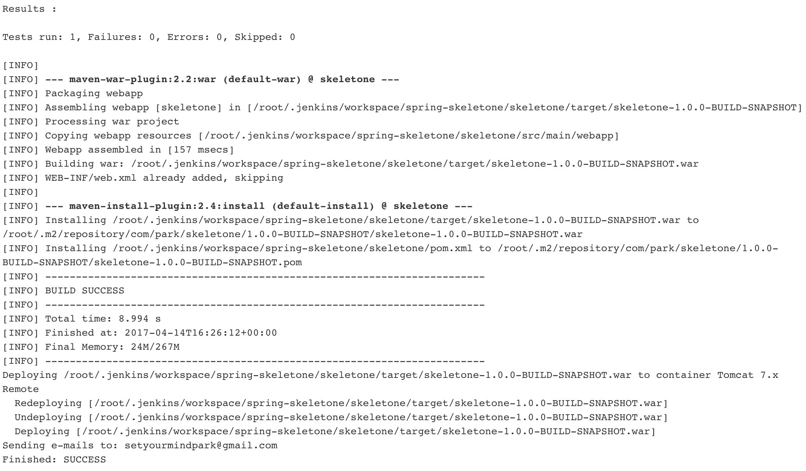

jenkins로 배포하기
maven으로 remote서버 배포하기 를통해 로컬 개발머신에서 remote서버로 배포하는 법을 알아보았다.
jenkins 가 준비되었다면, jenkins를 통하여 remote서버로 어떻게 배포하는지 알아보자.
플러그인설치
필자는 빌드결과를 메일로 받고, remote 서버로 배포할것이기에 필요한 2개의 플러그인을 설치해보자.
먼저 플러그인을 설치하기전에, 메일발송을위한 smtp 서버와 계정이필요하다.
google 계정이있다면 아주손쉽게 해당계정을 smtp 서버에서 메일을 보내는 발신자계정으로 사용할수있다.
smtp 설정
보안수준설정 해제
메일을 보내기위한 smtp 설정을 마쳤다면, 이제 jenkins에 플러그인을 설치해보자.
jenkins관리 -> 플러그인관리
[ Email Ext Recipients Column Plugin ]
[ Deploy to container Plugin ]
플러그인을 모두 설치하였다면 jenkins에 메일발송 smtp 설정을 하자.
jenkins관리 -> 시스템설정 -> 메일로알려줌
설정정보를 작성후 [ Test configuration ]
테스트메일이 정상적으로 발송된것을 확인할수있다.
git과 jenkins 연동
jenkins가 git project를 clone 하기위해선 사전에 git과 인증을 마쳐야한다.
즉 jenkins가 필요시에는 언제든지 git project를 clone 할수있는 상태를 마쳐야한다.
jenkins와 github과의 인증정보를 설정한다.
jenkins는 docker container를 이용하여 서비스하고 있으므로, host os든, container os든 둘중하나의 공간에서 rsa 인증방식을 사용할것이기에 private key를 지녀야한다.
필자는 docker의 container 레벨에서 rsa key를 생성을 하였다.
생성뒤엔 github에 등록할 rsa public key를 확인한다

해당명령으로 rsa public key를 알아보았다. 이제 github에 등록해보자
github -> Settings -> SSH and GPG Keys
rsa_id.pub 값 등록후 Add SSH Key
개발중인 프로젝트에서 push 이벤트가 발생하면, jenkins에게도 event를 위임(delegate)하기위해 github의 추가설정을 진행한다.
github -> 프로젝트 -> Settings -> Integration & Service
다음과 같이 설정을 진행한다.
주의사항은. jenkins가 돌고있는 url 뒤에는 /github-webhook/ 을 붙여주도록한다.(Install Notes에 상세히 기술되어있다.)
이제 git과 jenkins의 연동과 설정은 모두끝이났다. jenkins는 언제든지 git으로부터 프로젝트를 clone 받을준비가 된것이다.
프로젝트 설정
이제 본격적으로 jenkins에서 프로젝트를 설정해보자.
jenkins -> 새로운 item -> Freestyle project
[ 소스코드 관리 ]
Repository URL -> 프로젝트 ssh url을 입력한다.
Credentials -> Add
조금전에 생성한 id_rsa private key 를 입력하도록한다
조금전에도 설명을 했듯이 jenkins와 git은 rsa 암호화 통신으로 인증을 수행하기에 , public key가 등록된 github와 jenkins는 private key를 등록을 하여야 인증이 성립되는것이다. private key를 입력한다.rsa 알고리즘은 private key와 public key 간의 비대칭 알고리즘이다.
rsa 알고리즘 암호화 통신일경우, private key는 public key로부터 암호화된 것을 복호화한다. 당연히 그반대로는 되지않는다 .
rsa 개념 참고
[ 빌드유발 ]
GitHub hook trigger for GITScm polling
git에서 push event가 발생하면 jenkins가 자동으로 빌드한다.
[ Build ]
Add build step -> Invoke top-level Maven targets -> 고급
jenkins가 maven을 활용하여 프로젝트를 빌드할때, pom.xml 에 기술되어있는 빌드설정을 참고한다. 필자는 다음과 같이 설정하였다.
필자의 프로젝트 구조는 default 경로인 src/main/java 와 src/main/resources 경로에는 common 로직과 설정들이 존재한다.
실제 프로젝트관련 비지니스로직들은 src/main/skeletone/java와 src/main/skeletone/resources에 존재한다. 따라서 maven에게 추가적인 경로의 소스와 설정들도 같이 빌드하도록 알려주도록 설정되어있다.
[ 빌드 후 조치 ]
이전에 설치한 플러그인을 사용할것이므로 [ Deploy war/ear to a container ] 추가하고,
메일로 빌드결과를 받을것이기에, [ E-mail Notification ] 을 추가한다.
이제 마지막으로 원격서버의 정보를 설정하고, 배포경로를 적어준다.
필자는 tomcat 배포 경로를 / 로 설정해주었다.
추가적으로 원격 서버의 tomcat 인증정보가 존재하여야한다. 이전의 포스트에도 해당내용이 있으니 참고하자.
원격서버 인증 설정
|
|
이제 모든 설정이 끝이났다. local 개발환경에서 프로젝트에 commit후 push event를 날려보자.


jenkins가 빌드부터 테스트, 배포, 그리고 결과통보까지 메일로 발송해줄것이다.
견해
현재 포스트에서는 기본 설치된 플러그인들과 추가로 필요한 플러그인을 설치하여 자동화를 수행하였다. 이밖에도 jenkins에서 지원하는 플러그인이 아주 다양하게있으니, 필요한 플러그인을 추가로 설치하여 추구하는 방향으로 설정하면 jenkins의 가치를 알게될것이다.
jenkins와같은 CI(Continuous Integration) 은 jenkins 를 비롯해 아주 다양하게 존재한다.
travis CI도 nodejs 쪽에선 상당한 인기를 끄는것으로 알고있으며, 요즘들어 jenkins CI 보다는 다른 플랫폼의 CI를 더 많이 사용하는 느낌이기도하다. 필자도 travis를 한번 사용해봐야겠다는 생각이든다 (말로만 … )
아무튼, CI가 어떤것이고 어떤 기능을 수행할수있는지 알게되었다면, 다른CI 들도 좀더 쉽게 접근할수있을것이라 생각된다.